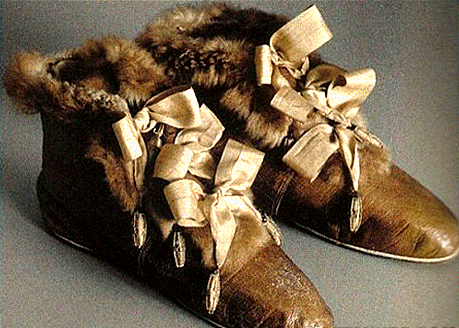

Оказывается, что в оригинальной сказке про Золушку, писатель Шарль Перро не говорил про хрустальные туфельки. Хустальные туфельки - это предмет сугубо русскоговорящего мира. Ошибка произошла по вине переводчиков, а потом закрепилась как класическая трактовка. Французское слово vair (беличий мех) они преподнесли как verre (стекло, хрусталь).
Дело в том, что когда Шарль Перро создал свою сказку, в моде были туфли, отороченные беличьим мехом. Стоили они очень дорого, и владеть ими могли только очень богатые и влиятельные люди. В них, к примеру, щеголяла любовница короля Франции Людовика XIV мадам Франсуаза Скаррон. Логично, что и Перро имел в виду именно беличьи, а не хрустальные башмачки.
Выглядели эти башмачки примерно так:

Рассказал об этом некто Харитоныч, вот его Liveinternet-дневник: https://www.liveinternet.ru/users/5781190/profile/